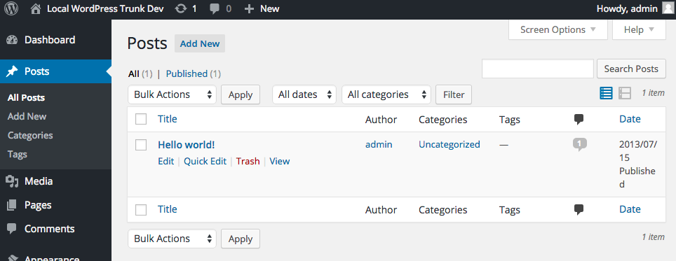
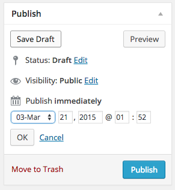

Welcome!
Understanding and Using WordPress
Who am I?
Payton
Code Wrangler

What is a CMS?
Content Management System
A tool to allow publishing, editing, and organizing content for a Website.
Cloud vs. Installed
Convenience vs. Ownership
Website? Blog? What's the difference?
Not much.
Both are published content.
What is WordPress?
“WordPress is web software you can use to create a beautiful website or blog. We like to say that WordPress is both free and priceless at the same time.” -WordPress.org
Open-source; Large community; Powers 20% of the web.
WordPress.com vs. WordPress.org
WordPress.com is fully hosted.
Security, backups, plugins, and updates are all provided.
WordPress.org is self hosted.
Custom themes, any plugin, full control.
Installing WordPress
- Find a Host*
- Download and Uncompress*
- Create a database*
- Upload WordPress*
- Visit the Site
*Sometimes the Host does the first four steps for you.
Installing WordPress
Once you visit the site for the first time, WordPress will guide you through its setup.
wp-admin
The back-end for WordPress.
wp-admin Menus
Where you will find everything you need. Let's skim over it.
wp-admin Appearance
All the visual setup of your site is in here.
The Customizer
A different interface for visual aspects of your site. A relatively recent addition to WordPress, it gives a live preview of any setting that you change.
wp-admin Users
You can give others access to your site, and give each user a different role.
Different roles give different privileges on the site.
Change your user settings
If you didn't change it already, never leave the admin password as the default.
Comment settings
Comments are enabled for everything by default.
Front page setting
This controls what you see on the "home" page, which is the first page that appears when visiting a site.
Often the difference between a blog and a website comes down to the front page setting. Do you want it to have a list of posts, or a single page?
Making a New Post
Making a New Post
Managing Posts
Posts vs. Pages
Posts are ordered content listed in reverse chronological order.
Pages are static and not listed by date.
Making a New Page
You get a menu item for free with each new Page, although you can edit them manually too.
The Editor
Editing Posts and Pages is mostly the same. The editor allows formatting text and media.
The Editor
You can add images by using the media library.
The Media Gallery
The Media Gallery
You can upload images just by dragging and dropping.
The Media Gallery
Once the image has been uploaded, you can insert it into the post by clicking "Insert Into Post"
The Editor
Images are inserted wherever your cursor was placed, but you can drag them around to where you want them.
Use the "Preview" button to see what the post will look like as you adjust the placement of images and text.
The Editor
The editor has two modes. Visual, which is the default...
The Editor
...and Text, which is raw HTML.
Embedding Media
You can also embed lots of media directly into the editor by just pasting the link. (Youtube, Twitter, Hulu, Instagram, Kickstarter, etc.)
Embedding Media
Publishing Options
You can save a post as a Draft, which will leave the post in the list for later.
Posts can even be scheduled to be published at a specific time in the future.
Categories and Tags
All posts can be tagged and be added to a category. These are called "Taxonomies" and assist with organizing the content on your site.
Categories are typically for broad types of content. Too many makes using them difficult.
Tags are easier to add as many as you like, and are usually more specific.
Categories and Tags
Categories and Tags
If you're familiar with #hashtags, that's pretty much how Tags work.
Categories and Tags
One advantage of using Categories and Tags is that each one has a special page listing all the associated posts.
Plugins and Themes
Both are ways to add functionality to a WordPress site.
Plugins usually just have one specific function that adds to any site. There can be many active at once.
Themes usually have more to do with appearance but can completely change the way that a site works. Only one may be active at a time.
Themes
Can be a simple combination of layout and styles.
Or they can change the entire basis of the site to serve a specific purpose.
e.g.: photo blogging, selling t-shirts, running a newspaper.
Themes
Can also be custom-tailored for your specific site, like many professional business themes.
Using a Plugin
They can be installed from the official plugin site or by uploading them yourself.
Just like Apps, there are a lot of plugins out there that are unnecessary, and occasionally even malicious.
In general, ignore plugins that make unlikely claims or that have no stars or reviews.
Using plugins from the official site is a good idea to protect yourself.
Using a Plugin
Using a Plugin
Plugins may add menu items for their specific function. This one adds a menu for various contact forms.
Using a Plugin
Let's add a contact form to a Page
Using a Plugin
Let's add a Security plugin. This one is called WordFence and can protect from a lot of different attacks.
Using a Plugin
Jetpack is a plugin which adds a lot of the WordPress.com special features to an installed site.
A Custom Theme
Themes can be complex, but a lot is taken care of by using a base theme, like Underscores.
A Custom Theme
Name your theme, download it, uncompress it, and upload it to your WordPress install
Un-customized Underscores
Editing the Stylesheet
Editing the Stylesheet
Try to make the theme look a little nicer using just the stylesheet. It's not easy!
Other parts of the Theme
Themes are also made up of many PHP files.
PHP allows inserting code directly into HTML, so you can program how a webpage should behave. This is where most of the power of WordPress themes comes from.
Other parts of the Theme
Try editing the header.php file to see what you can change.
Other parts of the Theme
The Web is more and more using Javascript. WordPress, as it has evolved, has included more and more Javascript.
Good Work!
WordPress's mission is "to democratize publishing", meaning that it gives you the control and power needed to put any sort of content out there on the Web that you can think of, without having to pay someone specific or do things in a specific way.
It can be used to make pretty much anything, so use your imagination!